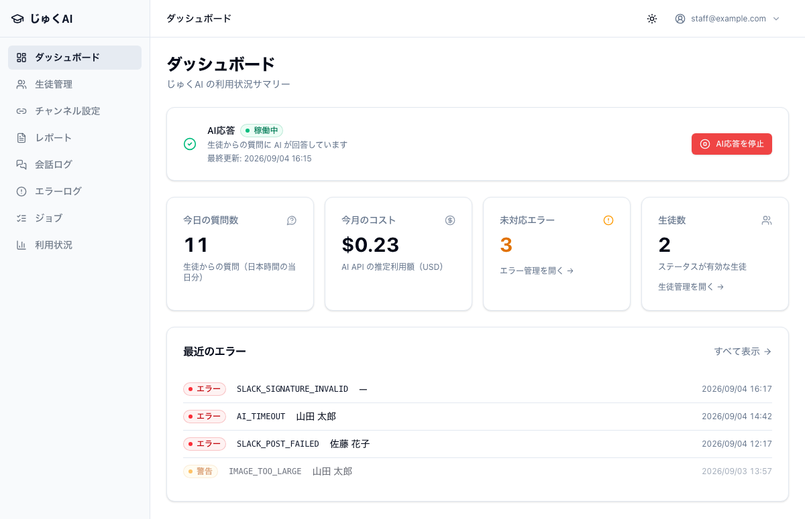

この章で分かること
生徒が Slack の自分専用チャンネルで質問すると、AI が答えて返します。 ふつうの AI チャットとの違いは、その生徒のことを踏まえて答えることです。
| AI が毎回参照するもの | 誰が用意するか | 詳しくは |
|---|---|---|
| 学年 | スタッフ（生徒情報の「学年」欄） | 第 3 章 3-1 |
| AI 用プロフィール （得意・苦手・説明のしかたなどの学習メモ） | スタッフ（手で書く） | 第 3 章 3-2 |
| 承認済みの月次レポート （質問に関係のある部分だけ） | スタッフ（手で書いて承認する） | 第 4 章 |
| 同じスレッドのこれまでのやり取り | 自動 | — |
つまり、スタッフが書いた情報の質が、そのまま AI の答えの質になります。 このマニュアルで一番大事なのが第 3 章の「AI 用プロフィールの書き方」なのは、そのためです。
じゅくAI の方針：答えを丸写しさせる道具ではなく、となりで一緒に考える「伴走者」としてふるまうように作られています。 成績を評価したり採点したりはしません。1 回の返信で生徒に投げかける質問は多くても 1 つまで、という決まりも入っています。
生徒には「自分専用のチャンネル」が 1 つあります。そこでの流れはこうです。
@じゅくAI を付けて質問を書く@じゅくAI 二次関数のグラフの書き方がわからない@じゅくAI は不要）Slack 側の見た目は、実際のワークスペースでご自分の目で確かめてください。
（この手引きに貼れるのは管理画面の画像だけです。）テスト用のチャンネルで
@じゅくAI 二次関数のグラフの書き方がわからない と 1 往復してみると、次の順に変わります。
新しく入ったスタッフには、この 1 往復を実際にやってもらうのがいちばん早い説明になります。
| 生徒ができること | 補足 |
|---|---|
| 文章で質問する | 目安 6000 文字まで。長すぎると「質問が少し長すぎて処理できなかったよ」と返ります |
| 写真で質問する | 問題・ノート・数式の写真。1 回に 3 枚まで／ jpg・png・webp ／ 1 枚 20MB まで |
| スレッドで続けて聞く | 2 回目以降は @じゅくAI 不要。話が長くなっても前半を要約して文脈を保ちます |
生徒が @じゅくAI を付けずにチャンネルへ書き込んだ場合、じゅくAI は反応しません。
これは仕様です（スタッフの連絡や雑談に反応しないようにするため）。
ただし一度じゅくAI が答えたスレッドの中では、メンションなしで会話を続けられます。
スタッフの操作は、すべて Web の管理画面で行います。ログイン用のアドレスとパスワードは管理者から受け取ってください。 画面の左側にメニューが並んでいます。

| メニュー | 何が見られるか | いつ使うか |
|---|---|---|
| ダッシュボード | AI が動いているか / 今日の質問数 / 今月のコスト / 未対応エラー / 生徒数 | 毎日（第 2 章） |
| 生徒管理 | 生徒の一覧・登録・編集、AI 用プロフィール、試験期間 | 生徒が増えたとき・情報を直すとき（第 3 章） |
| チャンネル設定 | Slack チャンネルと生徒の紐付け | 生徒が増えたとき（第 3 章 3-7） |
| レポート | 月次レポートの作成・承認 | 毎月（第 4 章） |
| 会話ログ | 生徒と Bot のやり取りの記録 | 答えの質を確かめたいとき（第 2 章 2-3） |
| エラーログ | うまくいかなかった処理の記録 | 毎日（第 2 章 2-2） |
| ジョブ | 質問の処理が詰まっていないか | 「回答が来ない」と言われたとき（第 2 章 2-5） |
| 利用状況 | 質問数・コスト・画像付き質問の割合の推移 | 月末・コストが気になるとき |
メニューの名前と、開いた先の見出しが少し違うことがあります （「レポート」→「レポート管理」、「エラーログ」→「エラー管理」、「チャンネル設定」→「チャンネル紐付け」、「ジョブ」→「ジョブ管理」）。同じ画面です。
| 操作 | スタッフ | 管理者 |
|---|---|---|
| 生徒の登録・編集、AI 用プロフィール、試験期間 | できる | できる |
| チャンネルと生徒の紐付け | できる | できる |
| 月次レポートの作成・承認 | できる | できる |
| 会話ログ・エラーログ・ジョブ・利用状況を見る | できる | できる |
| 緊急停止（AI 応答の停止・再開） | できない | できる |
スタッフでも「AI応答」のカードは見えますが、ボタンを押すと
AI応答の停止・再開は管理者のみ実行できます と表示されます。
止める必要があるときは管理者に連絡してください（第 7 章 7-1）。
左メニューに「チャンネル設定」が出てこない場合は、あなたのログイン権限がまだ切り替わっていない可能性があります。 管理者か開発者に確認してください。紐付けはスタッフが行える運用になっています。